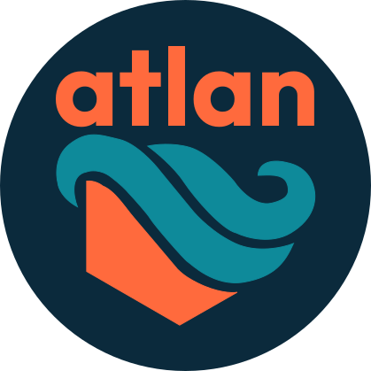

Liquid Precision & The Quiet Sage.
A self-initiated UX concept project: an offline-first, bilingual coaching PWA for executive endurance athletes (30–50), built end-to-end solo over ~10 weeks.
TrainingPeaks · "the data." Periodization telemetry, threshold metrics, TSS-based load management. Assumes the user has the bandwidth to interpret a CTL/ATL/TSB curve at 9 PM. Has the rigor; lacks the empathy.
Strava · "the crowd." Gamifies training into public performance — leaderboards, kudos, streaks. Uses social comparison as the adherence mechanism. Has the warmth; lacks the depth.
The Optimizer is a synthesis persona built from secondary research — Self-Determination Theory, adherence literature in endurance sports, app-store reviews and forum threads — and informal conversations with athletes in my network.
I did not run formal moderated interviews or recruit a research panel. The persona is presented as synthesis, not ethnography. No quote in this case study is attributed to an individual.
"Life happens. Want to swap tomorrow's 6 AM threshold set for a 30-minute easy aerobic on Wednesday? The week still works."
Sage 60 / Hero 40 on this surface. Empathy first ("Life happens"), action second ("Want to swap"), reassurance third ("The week still works").
Effect size grounded in Teixeira et al. (2012) — SDT meta-review of autonomy-supportive interventions in physical-activity contexts (10–25% adherence improvements vs. controlling conditions).
If the 95% CI for the difference crosses zero, the hypothesis is rejected.
Predicted from the Wet Mode spec floors: 320×360 px touch zones (≈25× WCAG AA minimum), 16:1 contrast (exceeds AAA), and a one-direction swipe gesture grammar.
If the within-subjects mean delta is < 40% or error rates equalize, rejected.
Implementation used Cursor, Claude Code, and Codex as code-acceleration tools. This case study's web page and deck use Claude Design as a layout-and-render tool.
Strategy, IA, persona, voice rules, the reframe, the three pillars, the measurement plans, every operating rule — those are mine. AI accelerated implementation; AI did not author design strategy.